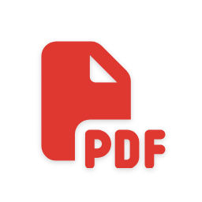
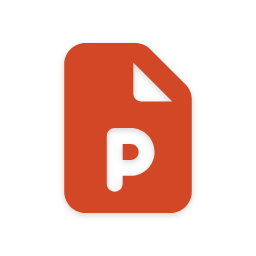

Guía de actividades — versión docente
Clases 01 a 06 · Informática, UNQ 2026
Cada actividad incluye la consigna completa, paso a paso, tal como la recibe el alumno en la Guía Visual — así, cuando alguien dice "me trabé en el punto 3 de la Actividad 2", queda claro a qué instrucción exacta se refiere. Al lado del tiempo estimado, los íconos de las apps que se usan en esa actividad. Debajo de cada una: qué tiene que tener listo el docente antes de la clase (insumos) y qué se sube al campus (si corresponde). Los tiempos son estimados — no figuran en la fuente, ajustar con la experiencia real de dictado.
1
Tu espacio de trabajo digital
 15 min
15 min
- Creá la carpeta "Informática - UNQ" en Drive.
- Adentro, creá la subcarpeta "Clase 01". A partir de hoy cada clase va a tener la suya — es la diferencia entre encontrar un archivo en 5 segundos o no encontrarlo nunca.
- Compartí la carpeta "Informática - UNQ" (no la subcarpeta) con el docente: clic derecho sobre la carpeta → Compartir → escribí
unqarchivos@gmail.com → elegí el rol Editor → Enviar. Fijate que también existe el modo Comentar: no modifica el documento, solo permite sugerir cambios — sirve para trabajo colaborativo sin alterar el original.
📤 Entregable 1 (campus): link de la carpeta.
Insumos del docente: Mail para compartir: unqarchivos@gmail.com. Tarea creada en el campus para el link.
2
Tu primer trabajo de investigación

 25 min
25 min
Esta es tu primera investigación de la carrera — chica, pero real. El tema que elijas es solo la excusa para usar las herramientas de hoy; lo que importa es que al final puedas mostrar el recorrido completo: de dónde partiste, qué hiciste con eso, y a qué llegaste.
- Elegí un tema de tu carrera y buscalo en Google sin operadores.
- Repetí la búsqueda con al menos 2 operadores (
site:, filetype:, comillas, etc.) y compará los resultados.
- Aplicá CRAAP a los primeros 3 resultados de tu mejor búsqueda.
- Documentá el proceso en un Documento de Google nuevo, dentro de tu subcarpeta "Clase 01":
Actividad 2 - V01.
Insumos del docente: Ninguno adicional — usan Google y Google Imágenes.
3
Verificar lo que genera la IA


 20 min
20 min
Retomá el tema que investigaste en la Actividad 2.
- En el mismo documento (
Actividad 2 - V01), construí un prompt RTCFL sobre ese tema.
- Copiá el siguiente prompt (tu docente puede haberlo ajustado) y pegaselo a la IA en el mismo chat que usaste antes:
Prompt de ejemplo
Actuá como investigador académico especializado en [tu carrera]. Explicame [el tema que investigaste antes] para un estudiante de primer año de la UNQ, Argentina, 2026. Estructurá la respuesta en una introducción breve, tres subtítulos con los puntos clave y una conclusión. Máximo 300 palabras. Citá al menos 3 fuentes académicas reales posteriores a 2020.
- Anotá las fuentes que da la IA. Verificá cada una en Scholar o Redalyc.
- Elegí una afirmación del texto generado (que no sea una fuente) y verificá si es correcta.
- Completá la tabla de verificación en tu documento.
- Archivo → Historial de versiones → Nombrar versión → "Versión con IA". Así queda marcado el punto exacto en el que el documento pasó de tu investigación a incluir contenido generado por IA — podés volver a esa versión cuando quieras.
- Creá un Google Doc nuevo dentro de tu subcarpeta "Clase 01":
Texto IA - V01
- Pegá ahí la respuesta completa de la IA con pegado sin formato (
Ctrl+Shift+V, Mac: ⌘+Shift+V) — así el texto entra limpio, sin estilos escondidos.
- Guardalo en tu carpeta de Drive.
Insumos del docente: Acceso a un LLM (ChatGPT / Gemini / Claude / DeepSeek, etc.).
4
Tu perfil de LinkedIn
 20 min
20 min
- Ingresá a linkedin.com. Si ya tenés cuenta, abrila. Si no, creá una.
- Completá: foto, titular, educación (UNQ + carrera) y al menos 3 habilidades.
- Conectá con al menos 2 compañeros de clase.
- Seguí a la Universidad Nacional de Quilmes en LinkedIn.
- Copiá la URL de tu perfil al final de
Actividad 2 - V01 (tu documento de investigación de la Actividad 2).
📤 Entregable 2 (campus): URL del perfil.
Insumos del docente: —
2
Pegar el contenido en tu documento
10 min
- Volvé a la pestaña de Docs. El documento se llama
Documento Base - V01 y está en la subcarpeta "Clase 02".
- Posicioná el cursor al inicio del documento.
- Pegá con
Ctrl+Shift+V (Mac: ⌘+Shift+V) — NO con Ctrl+V. El texto aparece sin formato extraño.
- Compará: probá deshacer (
Ctrl+Z, Mac: ⌘+Z), pegá con Ctrl+V, observá la diferencia. Luego deshacé y usá Ctrl+Shift+V.
Insumos del docente: —
3
Formato manual en tu documento
15 min
- En
Documento Base - V01, elegí un párrafo del cuerpo del texto y justificalo (Ctrl+Shift+J, Mac: ⌘+Shift+J).
- Ponéle negrita a un término clave del texto, y cursiva a una palabra en otro idioma o un título de obra, si hay alguno.
- Seleccioná una oración completa, cortala con
Ctrl+X y pegala en otro lugar del mismo párrafo donde tenga más sentido — comprobá que el formato viajó con ella.
- Buscá una imagen relacionada con tu tema, filtrada por licencia Creative Commons (Google Imágenes: Herramientas → Derechos de uso → Con licencia Creative Commons, o en Unsplash). Anotá qué licencia tiene. Insertala en el cuerpo del texto (Insertar → Imagen → Subir o Buscar en la Web).
Insumos del docente: —
4
Aplicar estilos y generar el índice
20 min
- Identificá en el texto: ¿cuál es el título del documento? ¿Cuáles son las secciones principales? ¿Cuáles las subsecciones?
- Aplicá Título del documento al nombre del trabajo.
- Aplicá Encabezado 1 a cada sección principal.
- Aplicá Encabezado 2 a cada subsección (si las hay).
- Aplicá Texto normal a todo el cuerpo del texto.
- Elegí un título con Encabezado 1, cambiale la fuente o el color a mano y actualizá el estilo ("Actualizar 'Encabezado 1' para que coincida") para que el cambio se aplique a todos los títulos de ese nivel.
- Verificá en el panel de navegación que la estructura se vea correctamente. Si está vacío, volvé al paso anterior.
- Posicioná el cursor al inicio del documento (
Ctrl+Home, Mac: ⌘+Flecha arriba).
- Insertar → Saltos → Salto de página.
- Con el cursor en la página nueva: Insertar → Elementos de página → Índice.
- Verificá que el índice tenga al menos 3 entradas con números de página.
- Si está vacío: revisá los pasos anteriores y confirmá que los estilos quedaron bien aplicados.
Insumos del docente: —
5
Comentarios en tu propio documento
15 min
- Leé el texto que generaste.
- Buscá al menos 2 lugares que podrías mejorar o que te generan dudas.
- Seleccioná el primer fragmento →
Ctrl+Alt+M (Mac: ⌘+Opción+M) → escribí una nota de revisión para vos mismo.
- Hacé lo mismo con el segundo fragmento.
- Respondé uno de tus propios comentarios con lo que encontraste o decidiste.
- Resolvé ese comentario haciendo clic en "Resolver".
- Archivo → Historial de versiones → Ver historial. Observá que cada cambio quedó registrado.
📤 Entregable 1 (campus): link de Documento Base - V01.
Insumos del docente: Tarea creada en el campus para el link (pendiente crear).
6
Formato a mano, con medidas exactas
15 min
No se entrega — es para fijar la mecánica de formato manual de "Formato de texto: la barra de herramientas", con medidas exactas en vez de "a ojo". Es el tipo de ejercicio que te puede tocar en un examen sin IA al lado.
- Abrí un documento nuevo de Google Docs (no el
Documento Base - V01) y escribí, de tu puño y letra, dos párrafos cortos sobre cualquier tema que te guste.
- Escribí un título arriba de todo. Centralo (
Ctrl+Shift+E, Mac: ⌘+Shift+E) y aplicale fuente Arial, tamaño 18 y negrita.
- En el cuerpo, marcá una palabra clave en negrita (
Ctrl+B), otra en cursiva (Ctrl+I) y una frase corta en subrayado (Ctrl+U).
- Justificá los dos párrafos (
Ctrl+Shift+J, Mac: ⌘+Shift+J).
- Desde Formato → Alinear y sangría → Opciones de sangría → Sangría especial → Primera línea, aplicale exactamente 1,25 cm a cada párrafo — no lo hagas a ojo con la tecla Tab.
- Al final, escribí tu nombre, aplicale cursiva y alinealo a la derecha (
Ctrl+Shift+R, Mac: ⌘+Shift+R).
- Guardalo como
Práctica de formato - Clase 02. No hace falta compartirlo ni subirlo a ningún lado.
Insumos del docente: — (actividad marcada "Extra")
1
Perplexity en acción
 20 min
20 min
- Abrí
perplexity.ai en una pestaña nueva.
- Construí un prompt RTCFL sobre tu tema (el mismo de tu Documento Base). Pedile 3 fuentes con resumen.
- Evaluá las 3 fuentes con CRAAP. Anotá qué criterio usaste para cada una.
- Hacé clic en al menos 2 números de cita y verificá que la fuente exista y diga lo que Perplexity afirma.
- Abrí
Documento Base - V01 (subcarpeta "Clase 02") y posicioná el cursor al final del documento, después de todo el contenido que ya tenías.
- Escribí "Fuentes y Citas" y aplicá Encabezado 1. Debajo, copiá las 2 fuentes verificadas con
Ctrl+Shift+V (Mac: ⌘+Shift+V).
- Volvé al índice que insertaste en la Clase 02 (primera página) → clic en el ícono de actualizar. "Fuentes y Citas" tiene que aparecer como entrada nueva, sin escribirla a mano.
Insumos del docente: Acceso a perplexity.ai (gratis).
2
APA en tu documento
20 min
- Tomá las 2 fuentes verificadas de la Actividad 1.
- Identificá qué tipo de fuente es cada una (libro, web, video o IA).
- Debajo de "Fuentes y Citas", agregá un subtítulo "Bibliografía" con Encabezado 2 (
Ctrl+Alt+2, Mac: ⌘+Opción+2). Ahí escribí la cita APA correcta de cada fuente.
- En el párrafo donde usás cada fuente, agregá la cita en el texto con el formato correcto: (Apellido, año).
- Agregá al menos 1 nota al pie en cualquier parte del documento (una aclaración o dato de contexto).
Insumos del docente: —
3
Tu cuaderno en Gemini Notebook
 20 min
20 min
- Abrí
notebook.google.com y creá un cuaderno nuevo.
- Subí las 2 fuentes verificadas de la Actividad 1 (PDF, URL o Google Doc).
- Hacé una pregunta al cuaderno sobre tu tema. Verificá la respuesta haciendo clic en el chip de cita.
- Copiá 2 ideas clave a la sección "Fuentes y Citas" de tu
Documento Base - V01, con Ctrl+Shift+V (Mac: ⌘+Shift+V). Cada idea con su cita (Apellido, año) en el texto.
- Generá un Resumen de Audio en formato Resumen, en español. Escuchá 2 minutos. Anotá una cosa correcta y una que te llame la atención.
Insumos del docente: Acceso a notebook.google.com (cuenta Google).
4
Justificar tu elección de herramienta
20 min
- Abrí
arena.ai/leaderboard.
- Elegí la categoría que corresponde a la investigación de hoy (Search o Text) y anotá qué modelo lidera esa categoría en este momento.
- Compará ese resultado con la categoría Document.
- En tu
Documento Base - V01, al final de la sección "Fuentes y Citas", escribí un párrafo breve (3-4 líneas): qué herramienta usarías para investigar un tema nuevo de tu carrera, y por qué — con al menos un dato concreto del leaderboard (nombre del modelo o categoría) como respaldo.
Insumos del docente: Acceso a arena.ai/leaderboard (gratis, sin cuenta).
1
La tabla de fuentes
20 min
- Abrí
Documento Base - V01 (subcarpeta "Clase 02") → Archivo → Crear una copia → nombrá la copia Trabajo Integrador - V01 → movela a la subcarpeta "Clase 04".
- Completá la estructura con estilos donde todavía falte: Título (nombre del trabajo) al inicio si no lo tenías, y Encabezado 1 en Introducción, Desarrollo y Conclusión. "Fuentes y Citas" y su subtítulo "Bibliografía" ya tienen el estilo aplicado desde la Clase 03 — no hace falta tocarlos. Aplicá los estilos desde la barra, no a mano.
- En Introducción, escribí 2 o 3 oraciones que presenten tu tema.
- Antes de Bibliografía, insertá una tabla de 3 filas × 4 columnas. Combiná la fila 1 en una sola celda: "Fuentes verificadas — Trabajo Integrador". En la fila 2 escribí los encabezados de columna (Fuente · Autor/Año · Dato clave · CRAAP: criterio más débil) y completá las dos filas siguientes con las fuentes que ya verificaste en la Clase 03 — no hace falta buscar de nuevo.
- Formato: fila 1 combinada con fondo oscuro y texto blanco centrado; fila 2 con fondo gris claro y negrita; columna 1 alineada a la izquierda, el resto centrado; bordes exteriores visibles.
- Opcional: en Desarrollo, agregá una segunda tabla de 4 filas × 3 columnas que compare dos enfoques, períodos o posturas sobre tu tema, con el mismo esquema de formato.
Insumos del docente: Ninguno — parte del doc de Clases 02-03.
2
Una imagen anclada
15 min
- Abrí
Documento Base - V01 (subcarpeta "Clase 02") y recuperá la imagen con licencia Creative Commons que ya buscaste y evaluaste ahí. Si encaja en algún párrafo de Desarrollo, usá esa — ya hiciste el trabajo de buscarla y confirmar la licencia. Si no encaja con el tema tal como evolucionó, buscá una nueva en Unsplash (uso libre, sin costo) o en Google Imágenes con el filtro Herramientas → Derechos de uso → Creative Commons.
- En el documento, posicioná el cursor en el párrafo de Desarrollo que más se relaciona con esa imagen. Insertar → Imagen → Subir desde la computadora.
- Clic en la imagen → Ajustar texto. Clic derecho → Opciones de imagen → Ajuste de texto → Mover con el texto.
- En el mismo panel Opciones de imagen → Ajuste de texto, ajustá los márgenes para que el texto no quede pegado.
- Verificá: agregá una línea en blanco en el párrafo de arriba. La imagen tiene que seguir al párrafo, no quedarse fija.
Insumos del docente: Acceso a Unsplash o Google Imágenes (filtro CC).
3
Un documento navegable
20 min
- En Bibliografía, verificá que el DOI de al menos una fuente sea una URL completa como hipervínculo (
https://doi.org/10.xxxx/...).
- En Desarrollo, elegí un dato o afirmación puntual que te convenga poder encontrar rápido después — no una sección entera. Posicioná el cursor justo ahí → Insertar → Marcador. Es un punto invisible, no una sección.
- En la Introducción, escribí una frase corta que apunte a ese dato (algo como "el dato completo se desarrolla más abajo"). Seleccioná el fragmento →
Ctrl+K (Mac: ⌘+K) → pestaña Encabezados y marcadores → elegí el marcador que acabás de crear.
- En Desarrollo, buscá otra frase que mencione un concepto que se retoma en Conclusión. Seleccionala →
Ctrl+K (Mac: ⌘+K) → pestaña Encabezados y marcadores → esta vez elegí directamente la sección de destino (sin crear marcador: los títulos con estilo ya son destinos automáticos).
- Verificá los tres enlaces con
Ctrl+clic (Mac: ⌘+clic): el DOI externo, el marcador manual y el enlace a la sección.
Insumos del docente: —
4
Estructura final
20 min
- Cursor antes del título "Bibliografía" →
Ctrl+Intro. La bibliografía ahora empieza en página nueva.
- Insertar → Elementos de página → Encabezado. Escribí el título del trabajo y tu nombre, separados por un guión.
- Insertar → Elementos de página → Números de página, en el pie, centrado.
- En el cuerpo del texto, agregá al menos una nota al pie con una aclaración breve.
- Actualizá el índice (clic sobre él → ícono de actualizar) o insertalo si todavía no lo tenés: Insertar → Elementos de página → Índice.
- Archivo → Historial de versiones → Asignar nombre a la versión actual. Nombrala
Entrega Clase 04.
📤 Documento compartido y link subido a Moodle.
Insumos del docente: Tarea creada en el campus para el link.
5
Una tabla que sí se puede ordenar
15 min
No se entrega — es para practicar una mecánica de tabla que la tabla de fuentes de hoy no te pidió: ordenar filas. Al principio de la clase viste que combinar celdas rompe esa función; acá armás una tabla sin celdas combinadas, así que sí se puede.
- Abrí un documento nuevo de Google Docs (no el
Trabajo Integrador - V01) e insertá una tabla de 5 filas × 4 columnas.
- Completala con nombre, apellido, teléfono y dirección de 4 personas inventadas — una fila por persona, más la fila de encabezados.
- Seleccioná la tabla → clic derecho → Ordenar tabla → ordená alfabéticamente, primero por nombre y después por apellido.
- Pasá el texto de la fila de encabezados a mayúsculas (Formato → Texto → Mayúsculas).
- Aplicale sombreado a la fila de encabezados y bordes prolijos a toda la tabla.
- Guardalo como
Práctica de tablas - Clase 04. No hace falta compartirlo ni subirlo a ningún lado.
Insumos del docente: — (actividad marcada "Extra")
⚠️ Requiere Word de escritorio instalado (no la versión web) — confirmar antes que todos los alumnos tengan acceso, ya sea con cuenta institucional @uvq.edu.ar o en los laboratorios de la UNQ.
1
El documento de práctica
 10 min
10 min
- Abrí un documento nuevo en Word (Archivo → Nuevo).
- Disposición → Tamaño: si dice "Carta" o "Letter", cambialo a A4.
- Disposición → Márgenes → Normal. Verificá con Márgenes personalizados que sea 2,54 cm en los cuatro lados y "Aplicar a: Todo el documento".
- Disposición → Orientación → Vertical.
- Guardá el documento como
Práctica Word - V01.docx, en la subcarpeta "Clase 05". Es el archivo que vas a usar en todas las actividades de hoy.
Insumos del docente: Word de escritorio disponible.
2
Tus primeros saltos de sección
15 min
- En
Práctica Word - V01.docx, pedile a una IA: "Escribime 4 párrafos cortos sobre cualquier tema, sin títulos, solo texto corrido." Pegalo con Ctrl+Shift+V (Mac: ⌘+Shift+V) — pegar sin formato.
- Activá ¶ y verificá que ves los saltos de párrafo.
- Insertá un salto de sección Continuo después del primer párrafo: Disposición → Saltos → Continuo.
- Insertá un salto de sección Página siguiente después del segundo párrafo.
- Verificá en la barra de estado que el número de sección cambia al mover el cursor entre secciones.
- Eliminá uno de los saltos y observá qué pasa con el formato del texto restante. Deshacé con
Ctrl+Z.
Insumos del docente: Acceso a un LLM para generar los párrafos de prueba.
3
Layout mixto
15 min
- Seguís en
Práctica Word - V01.docx. Al final del texto que ya tenés, agregá una línea en blanco.
- Sección nueva (una columna): título breve + dos oraciones de introducción.
- Insertá un salto de sección Continuo.
- Sección de dos columnas: Disposición → Columnas → Dos. Pedile a una IA 4 párrafos cortos y pegalos con
Ctrl+Shift+V.
- Insertá otro salto Continuo para volver a una columna. Si no volvió sola: Disposición → Columnas → Una.
- Escribí una línea de cierre en la última sección.
- Verificá en Vista → Diseño de impresión que el layout se ve correcto.
Insumos del docente: —
4
Encabezados, revisión y PDF

15 min
- En
Práctica Word - V01.docx, doble clic en el encabezado de la Sección 1. Escribí: "Documento de práctica — Sección 1".
- En la Sección 2, desvinculá el encabezado del anterior y escribí: "Documento de práctica — Sección 2 (dos columnas)". Repetí en la Sección 3 si existe.
- Abrí Archivo → Imprimir y recorré el documento: ¿el papel es A4 con márgenes simétricos? ¿hay páginas en blanco de más? ¿los encabezados son correctos en cada sección? ¿las columnas se ven bien?
- Corregí lo que encuentres y volvé a revisar.
- Cuando esté bien: Archivo → Exportar → Crear PDF/XPS → Estándar (publicar e imprimir). Guardalo como
Práctica Word - V01.pdf.
- Abrí el PDF generado y confirmá que se ve igual a la vista previa.
Insumos del docente: —
5
Aplicar todo al Trabajo Integrador
25 min
- Abrí
Trabajo Integrador - V01 en Google Docs → Archivo → Descargar → Microsoft Word (.docx) → abrilo en Word de escritorio.
- Estructuralo en secciones: Sección 1 (una columna) con portada — título, tu nombre, fecha; salto de sección; Sección 2 (el cuerpo, dos columnas si el contenido lo permite); salto de sección; Sección 3 (una columna) con la bibliografía.
- Configurá los encabezados: la portada sin encabezado (activá "Primera página diferente" y dejalo vacío); las secciones siguientes, desvinculadas del anterior, con el título del trabajo.
- Agregá número de página en el pie, a partir de la Sección 2.
- Revisá en Archivo → Imprimir que se ve correcto en todas las páginas.
- Exportá: Archivo → Exportar → Crear PDF/XPS → Estándar (publicar e imprimir) → guardalo como
Trabajo Integrador - V01.pdf en la subcarpeta "Clase 05".
- Subí el PDF a la tarea de Moodle de la Clase 05.
📤 Trabajo Integrador - V01.pdf subido a Moodle.
Insumos del docente: Tarea creada en el campus para el PDF.
6
Tu primera combinación
20 min
Imaginá que trabajás en el área comercial de una empresa y tenés que escribirle a una cartera de clientes potenciales, cada uno con su rubro y su necesidad puntual.
- Creá una tabla en Word con 3 columnas: Nombre, Rubro, Necesidad detectada. Cargá 4 filas de datos inventados (por ejemplo: "Panadería López" · "Gastronomía" · "gestionar turnos de reparto").
- En un documento nuevo, escribí un mensaje comercial breve: "Hola «Nombre», vimos que en «Rubro» la necesidad de «Necesidad detectada» es cada vez más frecuente — te contamos cómo podemos ayudarte con eso esta semana."
- Vinculá el documento a tu tabla como fuente de datos (Correspondencia → Seleccionar destinatarios).
- Insertá los tres campos combinados en el lugar correcto.
- Navegá los 4 registros con Vista previa de resultados y verificá los datos.
- Finalizá y combiná → Editar documentos individuales → Todos. El archivo resultante tiene que tener 4 páginas con datos distintos.
Insumos del docente: — (actividad marcada "Extra")
1
Generar y comparar el esquema
 30 min
30 min
- Abrí tu Trabajo Integrador.
- Armá el prompt con RTCFL adaptado, como en el paso a paso de arriba.
- Probá ese mismo prompt en dos herramientas gratuitas: Gamma y Gemini Notebook, o reemplazá una de las dos por alguna de "Para explorar".
- Compará los dos resultados contra los principios de diseño visual de la sección anterior: ¿cuál respeta mejor el contraste? ¿cuál te deja menos texto para borrar? ¿cuál pasa mejor la prueba del fondo del aula?
- Elegí el mejor de los dos como punto de partida y revisalo diapositiva por diapositiva contra tu documento: ¿la idea central está bien representada? ¿sobra texto?
- Elegí tu editor final — Google Slides o PowerPoint, según a dónde exportó mejor tu herramienta (Gamma exporta directo a los dos). Nombrá el resultado
Presentación Integradora - V01 y guardalo en la subcarpeta "Clase 06".
Insumos del docente: Acceso a Gamma (gamma.app) y Gemini Notebook Studio (o alternativas gratuitas: Plus AI, Beautiful.ai, Slidesgo AI, Canva Magic Studio).
2
Aplicar diseño y movimiento

 20 min
20 min
- En tu
Presentación Integradora - V01, elegí un tema consistente con el contenido (tabla de arriba, según tu editor).
- Aplicá la misma transición a todas las diapositivas.
- En al menos 2 diapositivas, agregále una animación de aparición a un elemento (texto o imagen), con disparador "Al hacer clic".
- Insertá al menos 1 imagen relevante — podés reusar la del Trabajo Integrador.
- Repasá tu mazo completo contra la prueba del fondo del aula de la sección anterior.
Insumos del docente: —
3
Exportar con respaldo

15 min
- Si estás en Google Slides: Archivo → Descargar → Microsoft PowerPoint (
.pptx). Guardalo en la subcarpeta "Clase 06". Si ya estás en PowerPoint, este paso ya está resuelto — guardá el archivo directamente ahí.
- Generá el PDF: Archivo → Descargar → Documento PDF (
.pdf) en Slides, o Archivo → Exportar → Crear documento PDF/XPS en PowerPoint. Mismo lugar.
- Abrí el
.pptx y confirmá que se ve razonablemente bien — las animaciones pueden no ser 100% idénticas entre Slides y PowerPoint, y es normal.
- Subí a la tarea de Moodle de la Clase 06: el
.pptx, el PDF, y el link de tu Google Slides compartido si trabajaste ahí.
📤 .pptx + PDF subidos a Moodle, más link de Slides si corresponde.
Insumos del docente: Tarea creada en el campus para los archivos/links.
Notas para el docente
- Los tiempos son estimaciones de referencia — no figuran en la fuente. Ajustar según el ritmo real de cada comisión.
- Clase 05 es la única que depende de software instalado (Word de escritorio): confirmar con antelación el acceso de todos los alumnos.
- Las Clases 02 a 04 y parte de la 05 son un mismo documento que se arrastra y crece clase a clase (
Documento Base, creado en la Clase 02 sobre el mismo tema de Texto IA de la Clase 01 — no es una copia de ese archivo, es nuevo —, que crece en las Clases 02 y 03 → se renombra Trabajo Integrador en la Clase 04). Un alumno ausente en una clase intermedia arrastra el archivo incompleto a las siguientes.
- La Clase 06 retoma el mismo Trabajo Integrador (ya como PDF) y lo convierte en presentación — no es un tema nuevo, es el mismo contenido en otro formato.
- Las Clases 02, 04 y 05 tienen una actividad marcada "Extra, para hacer en tu casa": no se entrega ni se sube a Moodle, es práctica adicional sobre un archivo aparte (no toca el Trabajo Integrador).
- El texto de cada actividad es una transcripción literal de la Guía Visual del alumno (
Clase NN - <Título>.html) — si se edita una consigna ahí, replicar el cambio acá para que ambas versiones no queden desincronizadas.
- Los íconos de apps representan la app protagonista de cada actividad — cuando el paso a paso dice "un LLM" en general (sin nombrar uno puntual), se muestran ChatGPT/Gemini/Claude a modo de referencia, no como una app obligatoria específica. Viven en
unq-moodle/img/apps/, los mismos archivos que usa el resto del proyecto (sin copia recortada aparte) — un ícono con mucho margen interno (ej. los de Google) puede verse levemente más chico que uno sin margen (ej. PowerPoint) al lado en la misma fila.
- Cuando el punto central de una actividad es el archivo exportado (no la app en sí — ej. "Exportar con respaldo" en Clase 06), el ícono de app se reemplaza por el de tipo de archivo (
filetype-docx.png, -pdf, -pptx, -xlsx, -csv, en img/apps/) — para no duplicar información con el sello verde de entrega que ya indica qué se sube a Moodle.